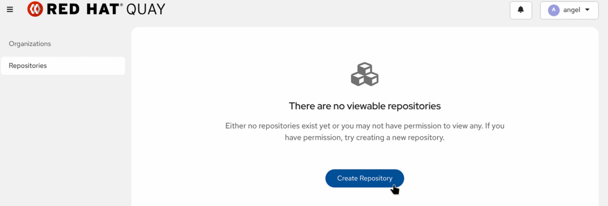
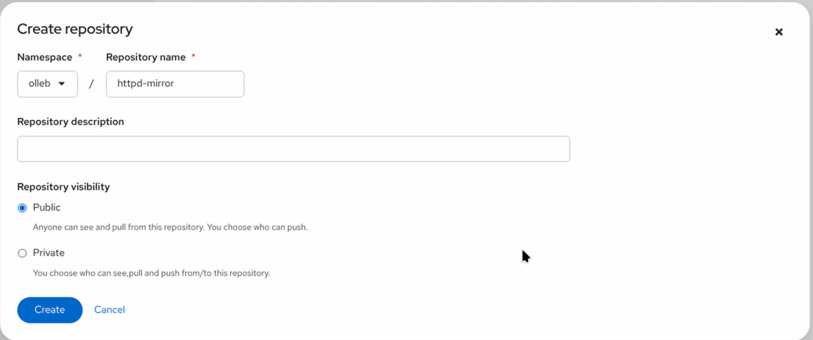
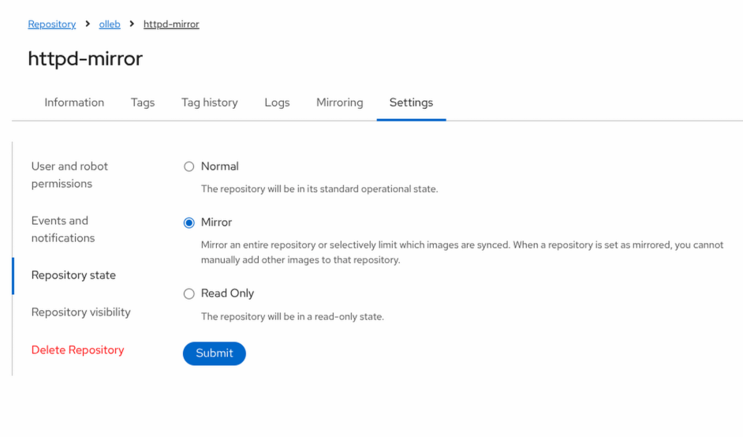
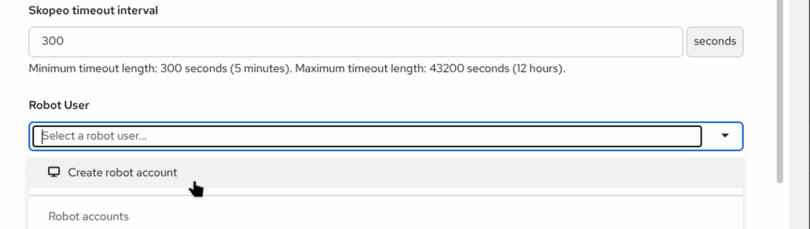
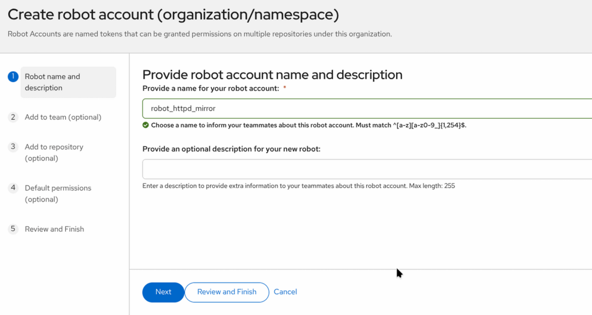
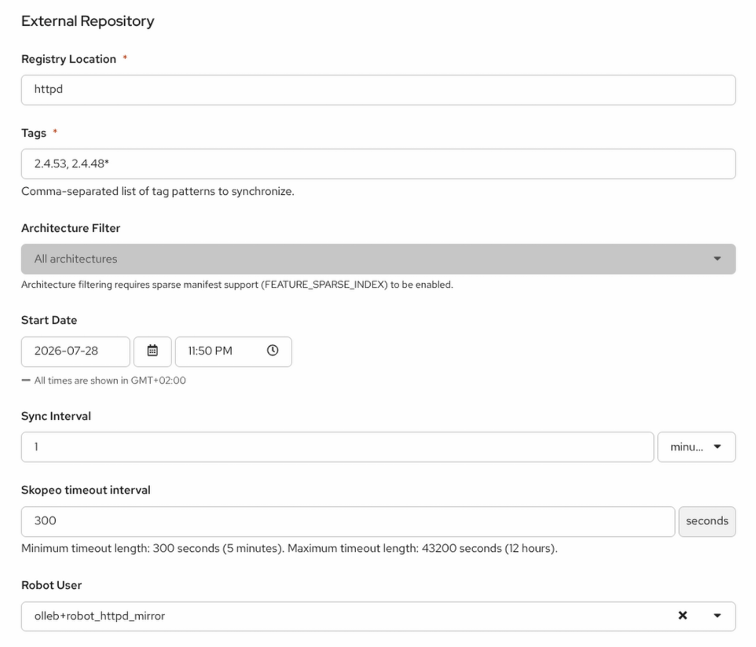

Repository Mirroring
Quay repository mirroring allows you to replicate container images from external or local registries into your Quay cluster.
Creating a Mirrored Repository
-
Click
Create New Repository.

-
In the drop-down list, select the organization, name the repository
apache/httpd-mirror, and set its visibility toPublic.

-
Click
Create Public Repository. -
Click the
Settingsicon. -
Change the
Repository StatetoMirror.

-
Click the
Mirroringicon. -
Fill in the fields with the following values:
-
Registry Location:
httpd -
Tags:
2.4.53, 2.4.48* -
Start Date: set to the current date and time
-
Sync Interval:
1 minute -
Skopeo Timeout Interval:
300 -
Robot User:
Create robot account
-


-
Click
Create Robot Account.

-
Click
Enable Mirror.